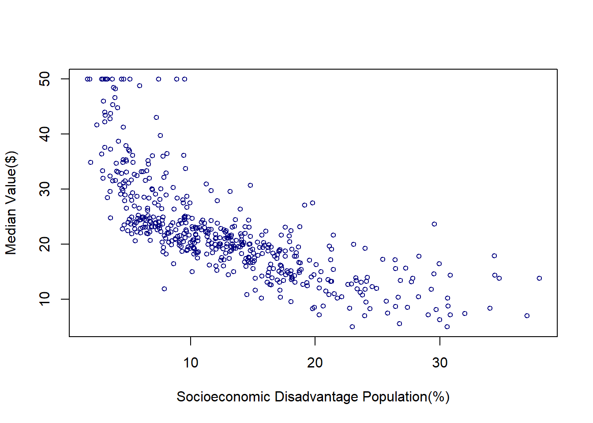
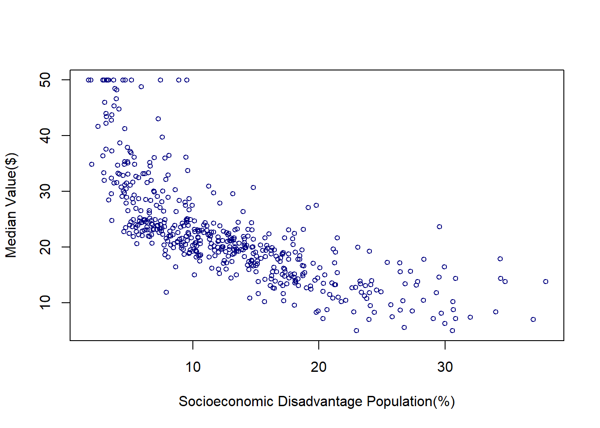
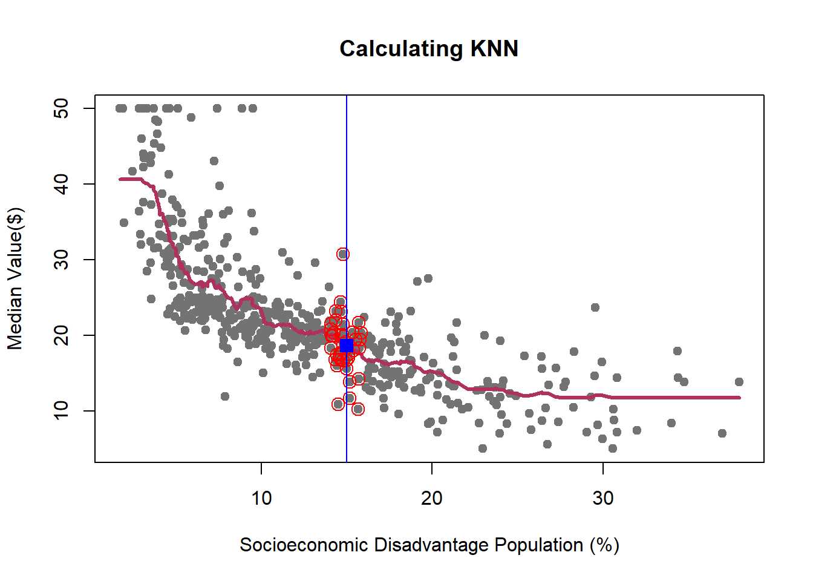
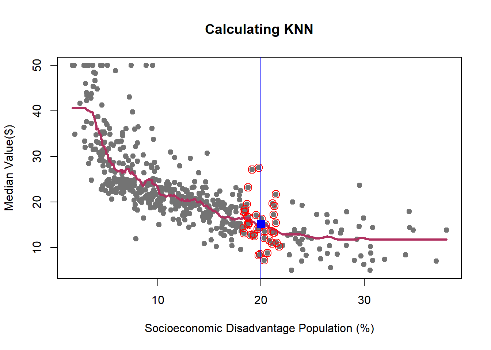
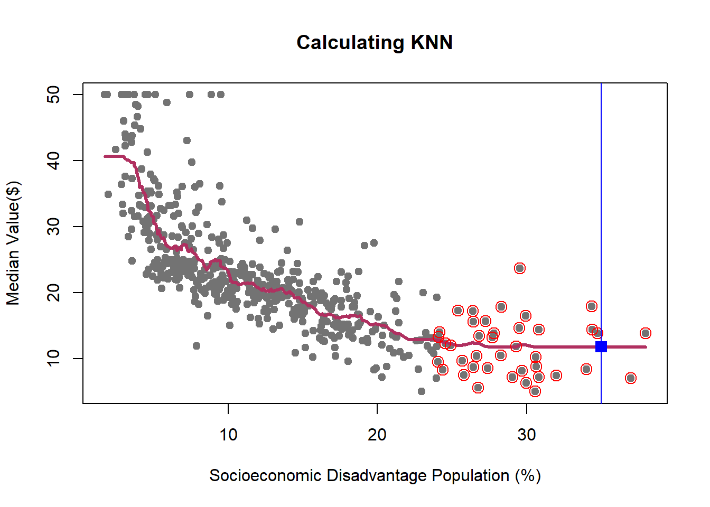
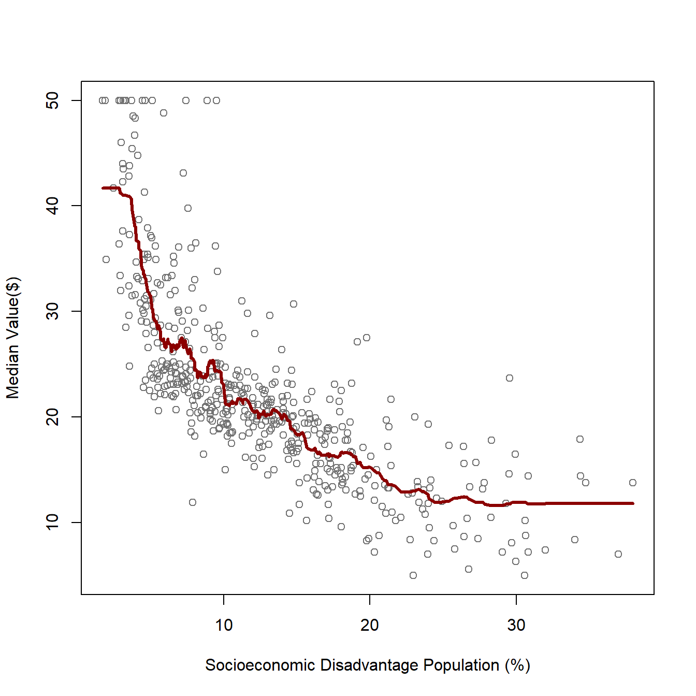
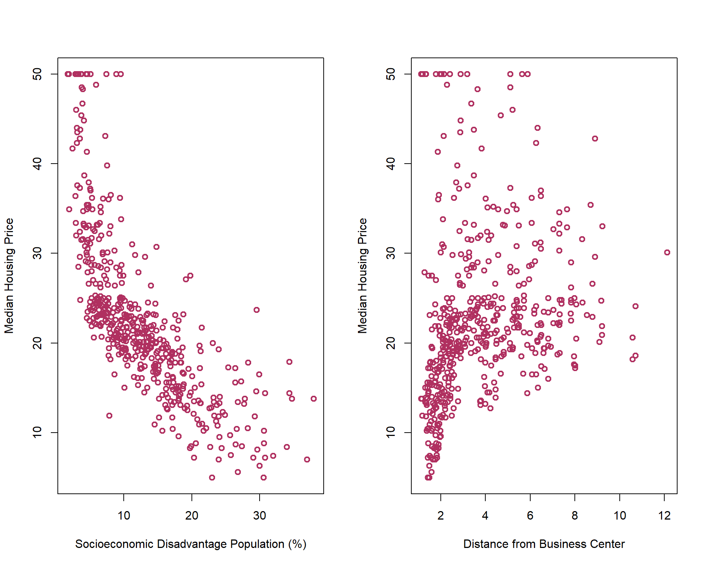
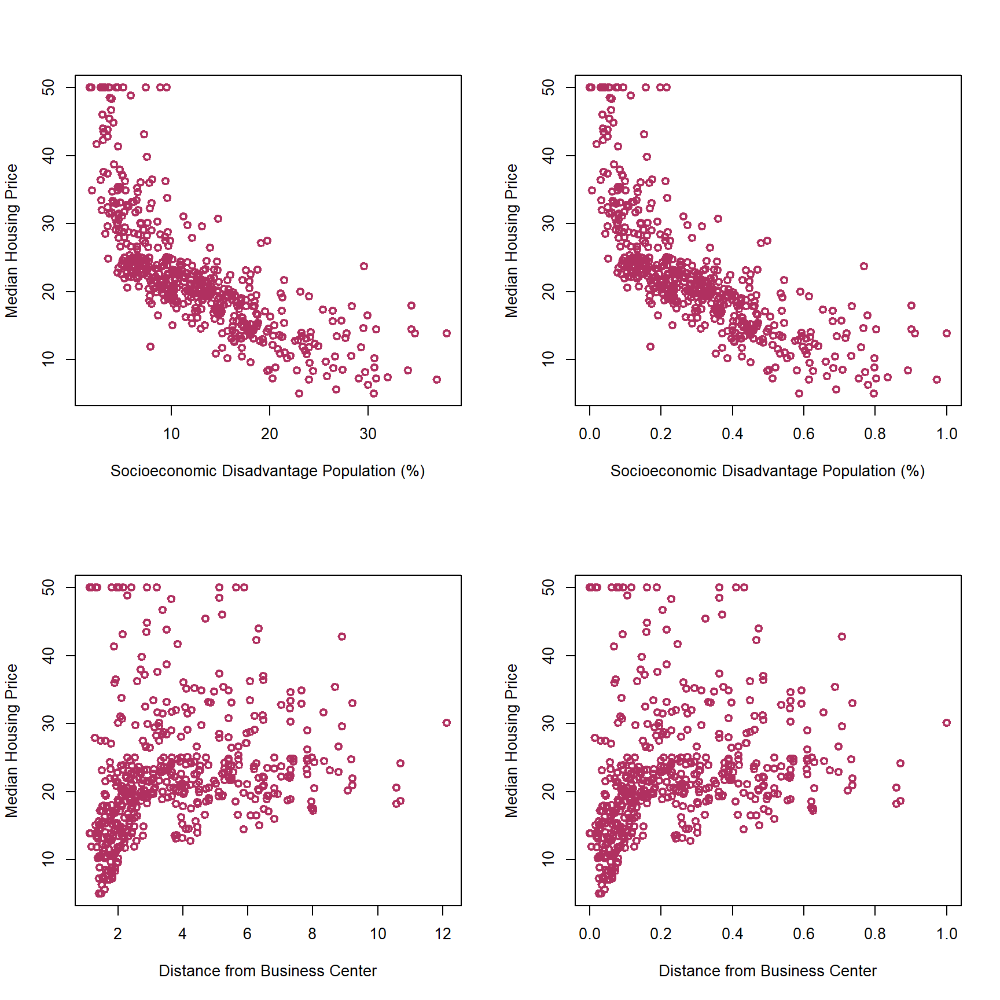
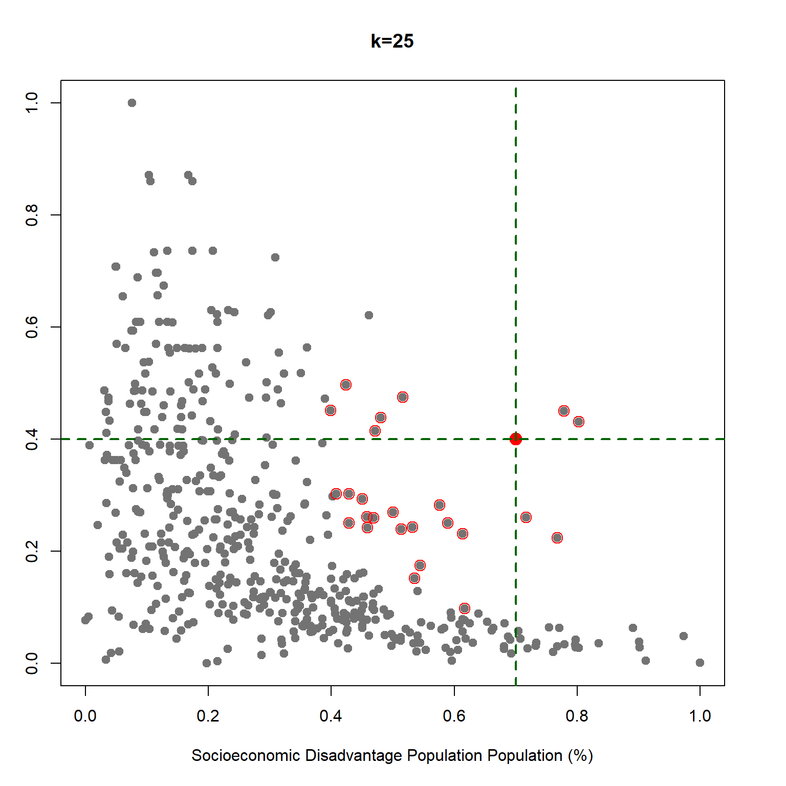
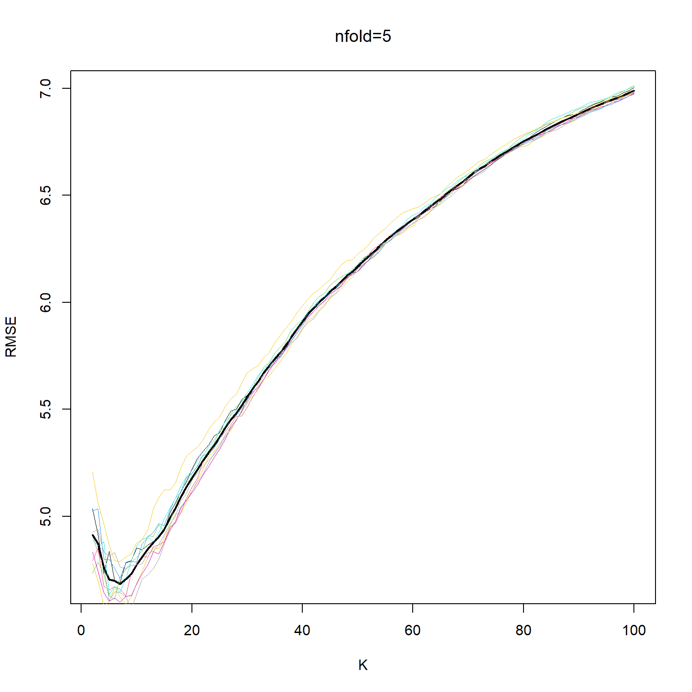

library(MASS) ## a library of example datasets
attach(Boston)
plot(lstat,medv,
col='navy',cex=.75,
xlab='Socioeconomic Disadvantage Population(%)',ylab = 'Median Value($)')
In the social sciences, we are often interested in examining the variation in an outcome variable, \(Y\)—also known as the dependent variable—conditional on a set of independent variables, \(X\), which are also referred to as predictors, features, or regressors. This relationship can be formally expressed as:
\[ P(Y=y|X=x) \] A common strategy for modeling this conditional relationship is to make assumptions about the function, \(f(\cdot)\), that maps \(X\) to \(Y\), and then estimate its parameters. The Ordinary Least Squares (OLS) method is one of the oldest and most important tools for modeling associations between variables. As a parametric model, OLS assumes a specific linear relationship between the dependent and independent variables. Under the classical assumptions of linear regression, the OLS estimator is considered the Best Linear Unbiased Estimator (BLUE).
However, in many real-world situations, these assumptions do not hold. When this happens, we can take one of two approaches:
In this context, we introduce the \(K\)-Nearest Neighbors (\(K\)-NN) algorithm, a classic example of a non-parametric model. Unlike parametric models, \(K\)-NN does not assume a specific functional form between \(X\) and \(Y\). Instead, it makes predictions based on the similarity between data points, using the values of the \(K\) nearest observations to estimate the outcome. While \(K\)-NN does not provide insights into the strength or nature of the association between the outcome variable and the predictors, it is often an effective algorithm for prediction, especially when the true relationship between variables is complex or unknown.
The Boston Housing Dataset contains information on housing in the Boston, Massachusetts area in the United States. Suppose we want to predict the median value of a house based on the percentage of the population experiencing socioeconomic disadvantage in a given neighborhood. In the original dataset, this variable is labeled as “lower status,” reflecting the historical language used when the dataset was created in the 1970s. However, modern academic and professional standards call for more thoughtful and respectful terminology when discussing socioeconomic conditions. Therefore, I have relabeled this variable as “socioeconomic disadvantage population” to provide a more accurate and considerate description. The below scatter plot shows how these two variables are associated:
library(MASS) ## a library of example datasets
attach(Boston)
plot(lstat,medv,
col='navy',cex=.75,
xlab='Socioeconomic Disadvantage Population(%)',ylab = 'Median Value($)')
To analyze how housing values are associated with the percentage of the population experiencing socioeconomic disadvantage in a neighborhood, we need to define a function that models this relationship. A linear function is often a reasonable starting point. In this case, we assume the following linear model:
\[ Y_i = \alpha + \beta X_i + \varepsilon_i \] Here, \(Y_i\) represents the housing value, \(X_i\) is the percentage of socioeconomic disadvantage, \(\alpha\) is the intercept, \(\beta\) is the slope coefficient, and \(\varepsilon_i\) is the error term.
After estimating the parameters of this model—denoted as \(\hat{\alpha}\) and \(\hat{\beta}\)—the predicted housing values are given by the Ordinary Least Squares (OLS) estimation formula:
\[ \hat{Y}_i = \hat{\alpha} + \hat{\beta} X_i \]
Since we have assumed a linear relationship between \(X\) and \(Y\), the fitted prediction line is also linear. This is reflected in the plot below, where the blue line represents the OLS-fitted regression line.
plot(lstat,medv,
col='grey',cex=.75,
xlab='Socioeconomic Disadvantage Population (%)',ylab = 'Median Value($)', main=TeX('$Y=\\alpha + \\beta X$'))
lmHousing=lm(medv~lstat)
abline(lmHousing$coef, col="navy", lwd=2.5)
yhat_lm25=predict(lmHousing,data.frame(lstat=c(20)))
points(20,yhat_lm25,cex=1, col="maroon", pch=15)
text(20,yhat_lm25,paste(round(yhat_lm25,digits = 2)),pos=3, cex=1,col="maroon")
When using OLS for prediction, we make several key assumptions about the form of the relationship between \(X\) and \(Y\), denoted as \(Y = f(X)\). These assumptions include linearity, homoscedasticity, independence of errors, and normality of residuals. The same applies to other parametric models, such as Logit and Probit, which assume specific functional forms for modeling binary outcomes.
However, non-parametric approaches impose fewer assumptions on the functional form of \(f(X)\). This flexibility allows them to model complex, non-linear relationships without requiring a predetermined structure. One of the most commonly used non-parametric algorithms is the \(K\)-Nearest Neighbors (\(K\)-NN) algorithm.
Before diving into the details of this method, let’s first explore how \(K\)-NN fits the function \(f(\cdot)\) to the data, relying on the proximity of data points rather than predefined functional forms.
#library(MASS) ## a library of example datasets
#attach(Boston)
library(kknn) ## knn library
# We first need to divide the sample to train (in-sample) and test (out-sample) subsampes.
n = nrow(Boston) # Sample size
#fit knn with k
train = data.frame(lstat,medv) #data frame with variables of interest
#test is data frame with x you want f(x) at, sort lstat to make plots nice.
test = data.frame(lstat = sort(lstat))
kf15 = kknn(medv~lstat,train,test,k=15,kernel = "rectangular")
plot(lstat,medv,xlab='Socioeconomic Disadvantage Population (%)',ylab = 'Median Value($)', col="gray45")
lines(test$lstat,kf15$fitted.values,col="blue",lwd=2)
dfp = data.frame(lstat=20)
kf15_20 = kknn(medv~lstat,train,dfp,k=15,kernel = "rectangular")
cat("kNN15: the median value of a house in a neighborhood with 20% Socioeconomic Disadvantage Population residents is",round(kf15_20$fitted,digits=2),"\n")kNN15: the median value of a house in a neighborhood with 20% Socioeconomic Disadvantage Population residents is 14.37 points(20,kf15_20$fitted,cex=1, col="maroon", pch=15)
text(20,kf15_20$fitted,paste(round(kf15_20$fitted,digits = 2)),pos=3, cex=1,col="maroon")To estimate \(f(\cdot)\) using \(K\)-Nearest Neighbors (\(K\)-NN), we first need to define a training dataset based on our main sample. The training set for a \(K\)-NN algorithm consists of \(N\) pairs of features (\(x\)) and outcomes (\(y\)) as follows:
\[ \{(x_1, y_1), (x_2, y_2), \dots, (x_n, y_n) \} \]
We begin with a single-feature model for simplicity. Later in this handout, we will extend the \(K\)-NN algorithm to handle cases with multiple features, where \(j > 1\).
The \(K\)-NN algorithm estimates \(f(x_i)\) by calculating the average of the outcome values for the \(K\) nearest neighbors to \(x_i\). This approach relies on the idea that observations with similar feature values tend to have similar outcomes, allowing \(K\)-NN to make predictions without assuming a specific functional form for the data.




We learned how K-NN works, but there is an issue here: K is chosen discretionary and for any \(K\), we can get (significantly) different results.

If we choose a large \(k\), then we get a simple line such that for k=500, the like is almost the mean of Median House price. On the other hand, choosing a small \(k\) gives a volatile estimation which captures the complexity of the data very well, yet it is very sensitive to any small changes in the data. Can we find a middle-way value for \(k\)? This is roughly the idea behind using cross-validation to overcome Bias-Variance Trade-Off. To discuss this idea more in detail, we need to learn about interpreting the prediction accuracy of an estimated function.
For any given feature (\(x\in X\)), or the set of features, we can find the predicted value of the outcome variable, \(\hat{y}\), using the estimated function \(\hat{f}(x_i)\). Given this information, we can find the prediction error for each observation by \(y_i-\hat{y}_i\). The prediction error of each statistical model can be calculated using different indices based on these individual errors. One of the most common one is Root Mean Square Error (RMSE).
\[\begin{equation} RMSE=\sqrt{\frac{1}{n}\sum_{i=1}^n [y_i-\hat{f}(x_i)]^2} \end{equation}\]
RMSE calculates the average prediction errors.
Now, let’s calculate the RMSE of predicting Median House Value in Boston Housing data when we use k-NN model, at different levels of k.
Below figure presents one of the core ideas of statistical learning. When the complexity of the model is low, training model has low variance but suffers high bias, which lead to a high prediction error. As the complexity of the model increases, the error of training sample decreases. However, since a model with a high level of complexity is trained to captured biases in the training sample, its prediction power for the test sample decreases, leading to a higher prediction error.
We can model association between \(X\) and \(Y\) as follow:
\[\begin{equation} Y= \underbrace{f(X)}_\text{Signal}+\underbrace{\epsilon}_{Noise} \end{equation}\]
\(\epsilon\) is the shock component, also known as noise, of the process. The goal of statistical modeling of a process is capturing the changes caused by \(f(x)\), as the shock/noise component is a random process. Thus, we do not want to mistakenly capture the changes caused by the noise part of the model as the changes caused by signal. If we fit a highly complex model which captures/model all changes in the outcome, then the risk of estimating a noisy model increases.

Estimating a simple model to explain a complex process leads to a bias function, thought this estimation has a low level of variance. On the other hand, a complex model is sensitive to every bit of changes in the data, which leads to a high variance, though the bias is low.
Dividing the sample to a train sample and a test sample allows us to evaluate the performance of predictive model. However, there are few challenges regarding this approach:
How can we be sure that the prediction results are independent of the train set? How can we draw the samples to address this concern?
Leaving a part of dataset for validating the trained model means that we overlook part of information that we can get from the validation sub-sample. As we overlook this part of information to train our model, we might get a higher level of errors.
The suggested in statistical learning literature solution to address the above issues is Cross-Validation.
In this approach, we divide the sample into train and test samples. Assuming that the size of train sample is \(n\), we leave one observation out, say \(i^{th}\) observation, and train the model using \(n-1\) remaining observations. Then, we predict the outcome of \(i^{th}\) observation and compute the amount of prediction error: \(RMSE_i=\sqrt{(Y_i-\hat{Y}_i)^2}\). We repeat this procedure for all observations in the test sample and compute the mean of Cross-Validation RMSE:
\[\begin{equation} RMSE_{LOCV}=\frac{1}{n}\sum_{i=1}^n RMSE_i \end{equation}\]
Leave-One-Out Cross-Validation is computationally intensive since you need to repeat the training and evaluation \(n\) times. An alternative approach is increasing the number of observations that are left out at each stage. To do so, we can divide the sample randomly to \(k\) almost equal size groups; then, we will leave one of these groups out for the validation and use the remaining \(k-1\) groups to train the model. Using this training model, we can predict the outcome for the observations in the validation subsample and then calculate the prediction for each of thoes observations. We will iterate the training and validation steps for each group (\(k\) times). Below figure shows a schematic view of \(k\)-fold Cross-Validation (KCV).

Considering the calculated error terms for each observation, we can compute the mean of \(RMSE^{KCV}\) as follow:
\[\begin{equation} RMSE^{KCV}=\sqrt{\frac{1}{n}\sum_{i=1}^n(Y_i-\hat{Y}_i)^2} \end{equation}\]
Lets use the average of 5-,10-, and 15-fol The best K is: 34 

In the previous sections, we studied the \(kNN\) prediction algorithm for the cases where there is only one feature. Finding the \(k\) nearest points for a problem with one feature/independent variable is straightforward, but how does the algorithm changes if we want to use more than one feature/independent variable?
The idea of \(kNN\) is predicting based on the most similar, closest, observations on the training subsample. Where \(p>1\), the problem is finding the predicted values of \(Y_k\) given a set of the features/covariates \(X_f=(x_{f1},x_{f2},\dots,x_{fp})\).
\(kNN\):
To predict \(\hat{Y}_f\) using \(X_f=(x_{f1},x_{f2},\dots,x_{fp})\), we can define a neighborhood around \(X_f\) which include \(k\) nearest \(X_i\)’s to \(X_f\) on the training dataset; then, we calculate the average of \(y_i\)’s corresponding to these \(k\) smallest \(d_i\).
There are different distance metric. Here, we use one of the most well-known one, that is Euclidean Distance:
\[\begin{equation} d_{if}=\sqrt{\sum_{j=1}^p (x_{fj}-x_{ij})^2}~, X_i~in~training~data \end{equation}\]
The second issue that we should address in employing \(kNN\) for problems with more than one feature is rescaling and normalizing the features.
Let’s take a look at below scatter plots of Median Housing price versus Percentage of lower status of the population, lstat, and Weighted distances to five Boston employment centers, dis.

As you can see in the above photo, the unit of lstat is different from the unit of dis. This different between units of features affect finding the nearest points around \(X_f\). One common solution is rescaling/normalizing the features before applying \(kNN\) algorithm. There are two common rescaling approaches:
\[\begin{equation} \tilde{x}=\frac{x-min(x)}{max(x)-min(x)} \end{equation}\]
This rescaling formula limit the X’s to \(0\) and \(1\).
\[\begin{equation} \tilde{x}=\frac{x-\bar{x}}{\sigma_x} \end{equation}\]
Let’s see how this rescaling changes the correlation between dis and medv:

As you can see in the above graphs, rescaling features does not change the association between the features and the outcome variable.

Now, let’s predict the median price of houses in Boston data using several features. The features that I picked to predict the housing price, medv, are crim,indus,age,dis,black, and lstat. Before estimating the prediction model, it can be helpful to plot the scatter plots showing the association between the outcome and the features.
library(MASS)
attach(Boston)
library(kknn)
source_url('https://raw.githubusercontent.com/babakrezaee/DataWrangling/master/Functions/docv_fun.R') ## Cross validation function
X=cbind(crim,indus,age,dis,black,lstat)
mmsc=function(x){return((x-min(x))/(max(x)-min(x)))}
X_s=apply(X, 2, mmsc)
set.seed(7)
kv=2:100 #these are the k values (k as in kNN) we will try
ndocv=10 # Number of cross validation
## 5-fold
cv_mat_5=matrix(0,length(kv),ndocv)
#pb <- txtProgressBar(min = 0, max = ndocv, style = 3) # Setting up the progress bar
for (i in 1:ndocv){
cv_temp=docvknn(X_s,medv,kv,nfold=5)
cv_mat_5[,i]=sqrt(cv_temp/length(medv))
#setTxtProgressBar(pb, i)
}
cv_mean_5=apply(cv_mat_5,1,mean)
kbest_5 = kv[which.min(cv_mean_5)]
cat("The min value of RMSE for 5-fold cross-validation is associated with k=",kbest_5,"\n")The min value of RMSE for 5-fold cross-validation is associated with k= 7 ## 10-fold
cv_mat_10=matrix(0,length(kv),ndocv)
#pb <- txtProgressBar(min = 0, max = ndocv, style = 3) # Setting up the progress bar
for (i in 1:ndocv){
cv_temp=docvknn(X_s,medv,kv,nfold=10)
cv_mat_10[,i]=sqrt(cv_temp/length(medv))
#setTxtProgressBar(pb, i)
}
cv_mean_10=apply(cv_mat_10,1,mean)
kbest_10 = kv[which.min(cv_mean_10)]
cat("The min value of RMSE for 10-fold cross-validation is associated with k=",kbest_10,"\n")The min value of RMSE for 10-fold cross-validation is associated with k= 5 plot(kv, cv_mean_5, xlab="K", ylab="RMSE", type='l', col="black", lwd=2 )
for (i in 1:ndocv) lines(kv,cv_mat_5[,i], col=550+i, lwd=.4)
lines(kv, cv_mean_5, xlab="K", ylab="RMSE", col="black", lwd=2, lty=2 )
title(main="nfold=5", font.main= 1)
plot(kv, cv_mean_10, xlab="K", ylab="RMSE", type='l', col="black", lwd=2 )
for (i in 1:ndocv) lines(kv,cv_mat_10[,i], col=550+i, lwd=.4)
lines(kv, cv_mean_10, xlab="K", ylab="RMSE", col="black", lwd=2, lty=2 )
title(main="nfold=10", font.main= 1)##What is the best of way of measuring
data = data.frame(medv,X_s)
kf_best_5 = kknn(medv~.,data,data,k=kbest_5,kernel = "rectangular")
RMSE_fold_5=sqrt(sum((data$medv-kf_best_5$fitted)^2)/length(data$medv))
cat("The RMSE for 5-fold kNN is", RMSE_fold_5,"\n")The RMSE for 5-fold kNN is 4.01538 kf_best_10 = kknn(medv~.,data,data,k=kbest_10,kernel = "rectangular")
RMSE_fold_10=sqrt(sum((data$medv-kf_best_10$fitted)^2)/length(data$medv))
cat("The RMSE for 10-fold kNN is", RMSE_fold_10,"\n")The RMSE for 10-fold kNN is 3.786824 lmf = lm(medv~.,data)
fmat = cbind(medv,lmf$fitted,kf_best_5$fitted,kf_best_10$fitted)
my_line <- function(x,y,...){
points(x,y,...)
segments(min(x), min(y), max(x), max(y),...)
}
colnames(fmat)=c("y","linear", "kNN5", "kNN10")
pairs(fmat, lower.panel = my_line, upper.panel = my_line, col='maroon')print(cor(fmat)) y linear kNN5 kNN10
y 1.0000000 0.7715306 0.9015274 0.9118707
linear 0.7715306 1.0000000 0.8534194 0.8376299
kNN5 0.9015274 0.8534194 1.0000000 0.9870313
kNN10 0.9118707 0.8376299 0.9870313 1.0000000